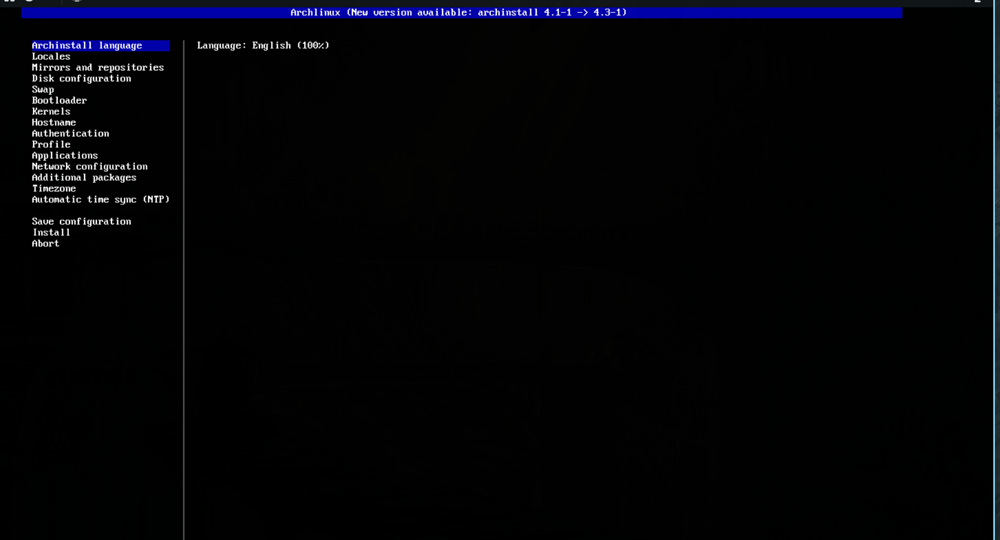
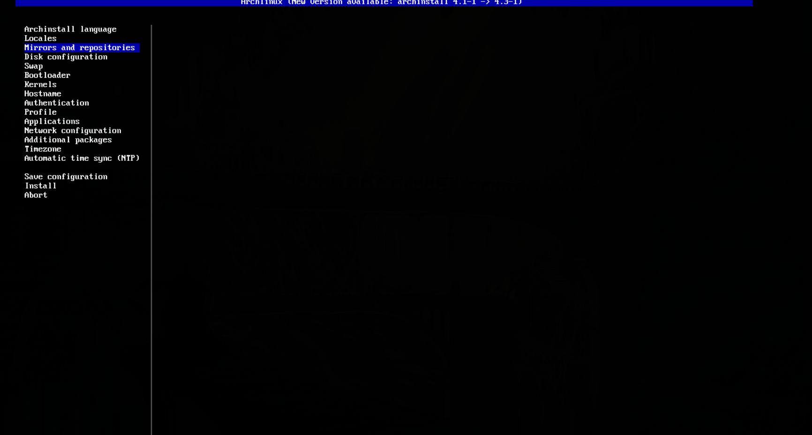

启动 archinstall
进入 Arch Linux Live 环境后，确保网络已连接，然后在终端输入：
archinstall
系统将启动交互式安装向导。你会看到一个蓝白色的 TUI 界面，使用 方向键 上下选择，Enter 确认，Tab 切换选项。
archinstall 主界面截图
点击可放大查看

步骤1
选择安装语言（Archinstall Language）
推荐选择 English，因为中文翻译可能不完整，而且英文界面在搜索资料时更容易对应。
不用担心，这只是安装界面的语言，系统安装后仍然可以设置中文。
语言选择界面
点击可放大查看

小提示：选择 English 可以在遇到问题时更容易搜索到解决方案。
步骤2
选择键盘布局（Keyboard Layout）
选择 us（美式键盘），这是最通用的键盘布局，大多数中国用户也使用此布局。
不要改动，直接按 Enter 继续即可。
键盘布局选择
点击可放大查看

步骤3
选择镜像源区域（Mirror Region）
选择 China 以获得最快的下载速度。镜像源决定了从哪个区域的服务器下载软件包，选择中国镜像可以让下载速度更快。
镜像源区域选择
点击可放大查看

步骤4
磁盘配置（Disk Configuration）⭐重点步骤
这是最重要的一步！选择你要安装 Arch Linux 的硬盘。
推荐选择：
1. 选择 "Use a best-effort default partition layout"（使用最佳默认分区布局）
2. 选择目标硬盘（通常是 /dev/sda 或 /dev/nvme0n1）
3. 文件系统选择 ext4（最稳定）或 btrfs（支持快照）
⚠ 注意：此操作会清除所选硬盘上的所有数据！请确保选对硬盘！如果有双系统需求，请选择"手动分区"后将空闲空间分配。
磁盘分区布局选择

选择目标硬盘

步骤5
磁盘加密（Disk Encryption）
设置硬盘加密密码。普通用户建议选择 否 / Skip，不需要加密。
如果选择加密，每次开机都需要输入密码解密硬盘，可能会稍微降低系统性能。
磁盘加密选项
点击可放大查看

步骤6
引导程序（Bootloader）
选择 Grub 作为引导程序。Grub 是最成熟的 Linux 引导程序，支持双系统引导。
如果你的电脑是 UEFI 启动（绝大多数现代电脑），选 Grub 即可。
引导程序选择
点击可放大查看

步骤7
Swap（虚拟内存）
选择 True（开启），大小设置为内存大小的 1~2 倍。
Swap 可以在内存不足时使用硬盘空间作为虚拟内存，确保系统稳定运行。
Swap 配置
点击可放大查看

步骤8
设置主机名（Hostname）
给你的电脑起一个名字，例如 archlinux、my-pc 或任何你喜欢的名称。
主机名是网络上识别你电脑的名称，没什么特殊要求，随便起。
主机名设置
点击可放大查看

步骤9
设置 Root 密码
root 是系统的超级管理员账户，密码请设置一个你能记住的强密码。
输入两次确认，注意输入时不会显示任何字符（包括星号），这是正常的安全设计。
Root 密码设置
点击可放大查看

步骤10
创建普通用户（User Account）⭐推荐
创建一个日常使用的普通用户账户（例如你的名字拼音）。
archinstall 会自动将用户加入 wheel 组（管理员组），可以使用 sudo 命令。
同样需要设置密码，建议和 root 密码不同。
创建用户名

设置用户密码

archinstall 创建的普通用户会自动加入 wheel 组并获得 sudo 权限，无需手动配置 visudo。
步骤11
选择 Profile（桌面环境/软件配置）⭐决定你的桌面
在下方的列表中选择一个预配置方案，包括桌面环境（DE）和窗口管理器（WM）。
推荐桌面环境：
- KDE Plasma — 功能最全，界面美观，类似 Windows 操作习惯，推荐新手
- GNOME — 简洁现代，类似 macOS 操作习惯，触屏友好
- Xfce — 轻量级，资源占用低，适合老旧电脑
- Cinnamon — 传统桌面风格，Windows 用户容易上手
- Hyprland — 酷炫的平铺式窗口管理器，适合喜欢折腾的高级用户
选择默认桌面类型

选择具体桌面/显卡驱动

步骤12
音频服务器（Audio）
选择 Pipewire（推荐）。Pipewire 是现代 Linux 音频方案，兼容 PulseAudio 和 JACK，低延迟，蓝牙音频支持好。
音频服务器选择
点击可放大查看

步骤13
内核选择（Kernel）
选择 linux（标准内核），这是最稳定、最广泛使用的内核。除非有特殊需求，否则默认即可。
内核选择
点击可放大查看

步骤14
额外软件包（Additional Packages）
可以在这里输入一些你想预装的软件包名称，多个用空格分隔。
如果不确定需要什么，可以先留空，系统安装好后随时可以用 pacman 安装。
推荐预装：
firefox vim git base-devel
（浏览器、编辑器、版本控制、编译工具链）
额外软件包输入
点击可放大查看

步骤15
网络配置（Network Configuration）
选择 NetworkManager，这是最通用、最好用的网络管理工具。
它支持有线、Wi-Fi、VPN、移动热点等几乎所有网络连接方式，桌面环境也会自动集成其托盘图标。
网络配置选择
点击可放大查看

步骤16
时区设置（Timezone）
选择 Asia/Shanghai，这是中国标准时间（UTC+8）。
时区选择
点击可放大查看

步骤17
可选仓库（Optional Repositories）
建议开启 multilib（多架构支持仓库），它可以让你安装 32 位软件和库。
很多软件（如 Steam、Wine）需要 multilib 仓库才能正常运行。
不用担心，开启后不会对系统性能有任何影响。
可选仓库选择
点击可放大查看

步骤18
确认配置并开始安装（Install）⭐最后一步
仔细检查所有配置项，确认无误后选择 Install，按下 Enter。
安装过程通常需要 5~15 分钟，取决于网络速度和电脑性能。
安装完成后系统会提示你 "是否 chroot 进新系统"，选 否，然后输入 reboot 重启即可。
确认所有配置

安装进行中

安装完成后记得拔出 U 盘再重启，否则会再次进入 Live 环境！
archinstall 安装完成！接下来学习如何使用 Arch Linux！
常用软件安装、桌面环境配置、AUR 使用……都在这里！
进入使用教程 → Arch Linux 使用指南